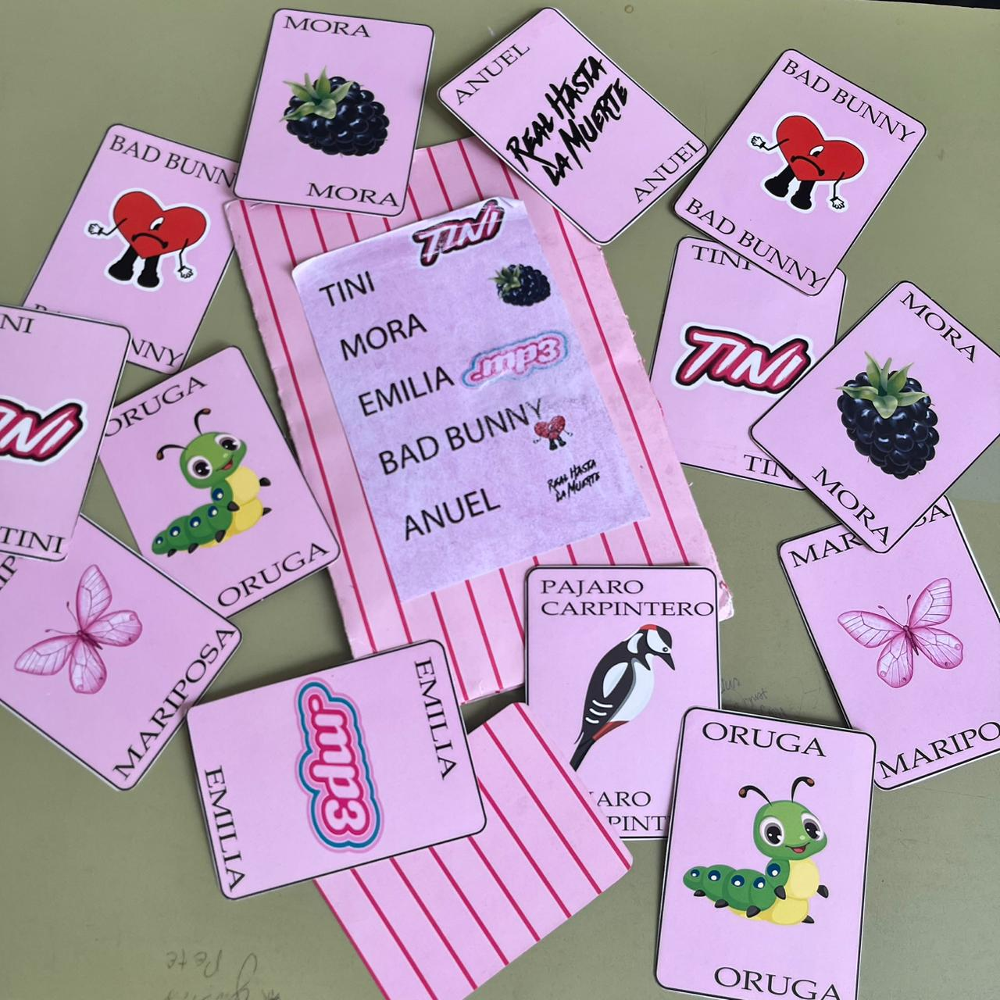
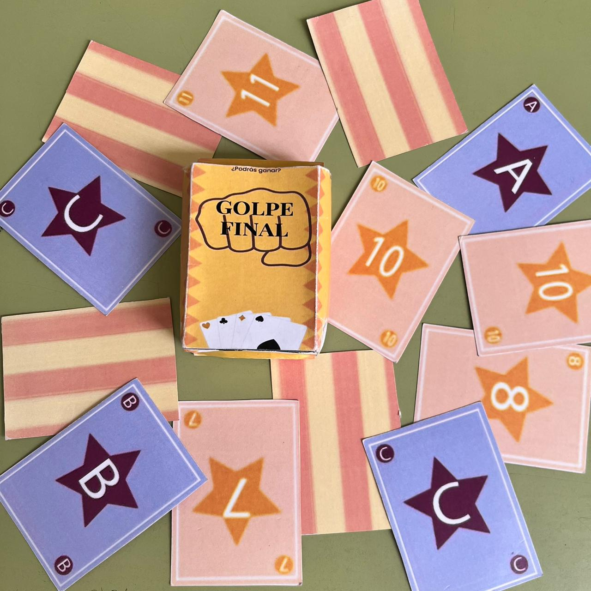
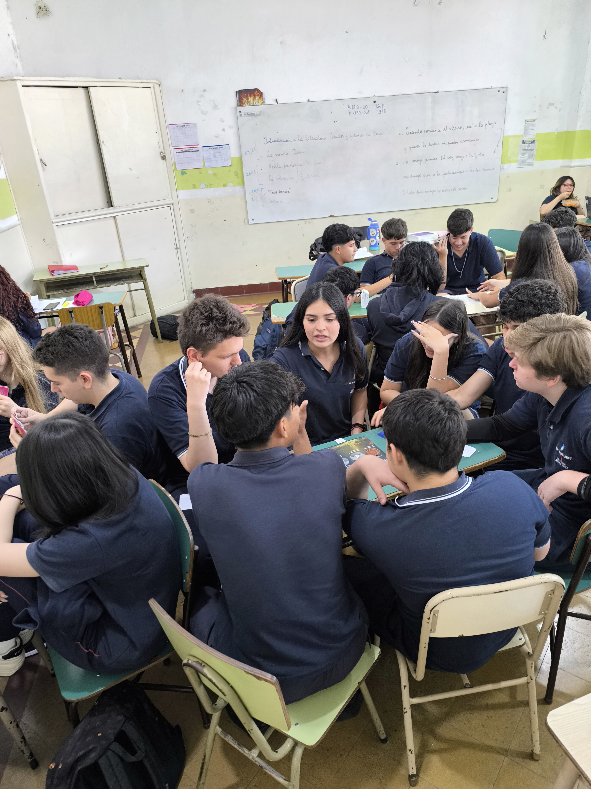
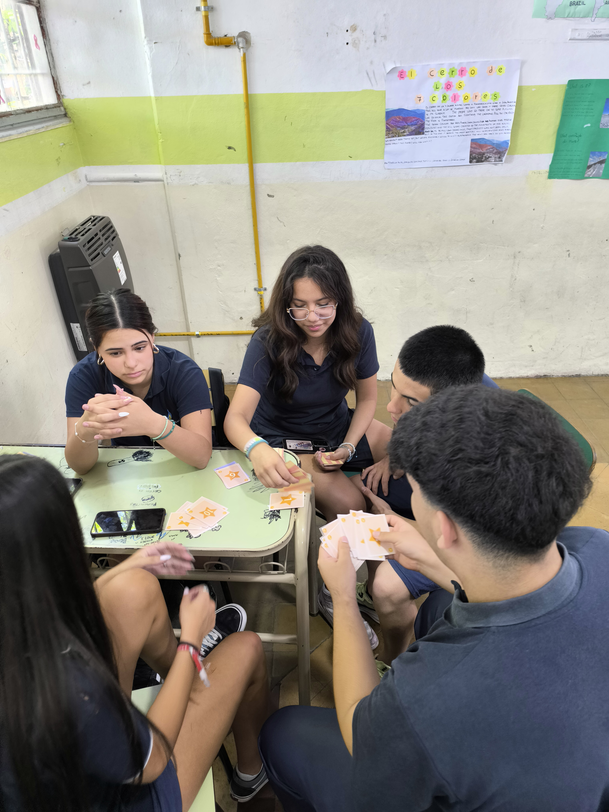
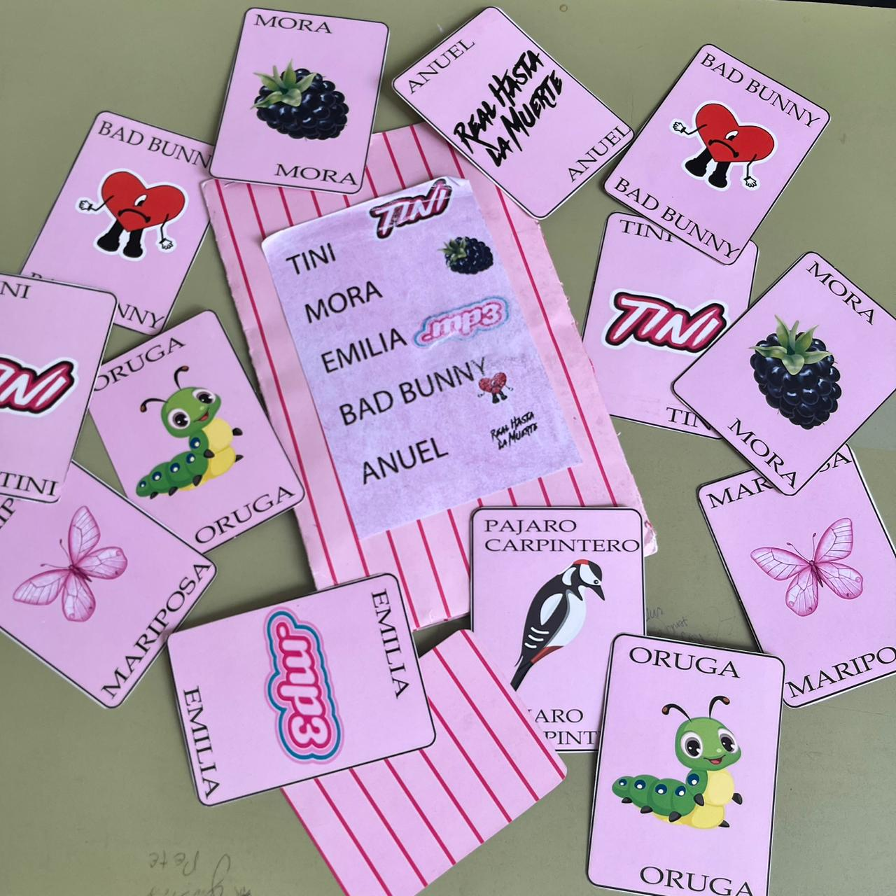
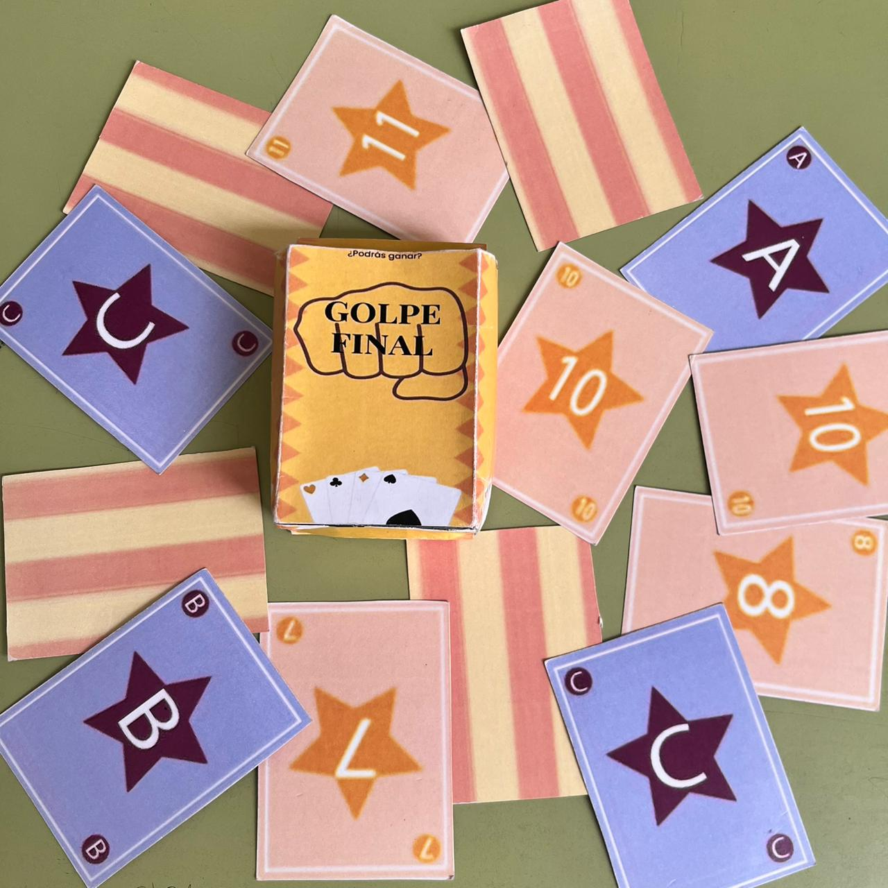
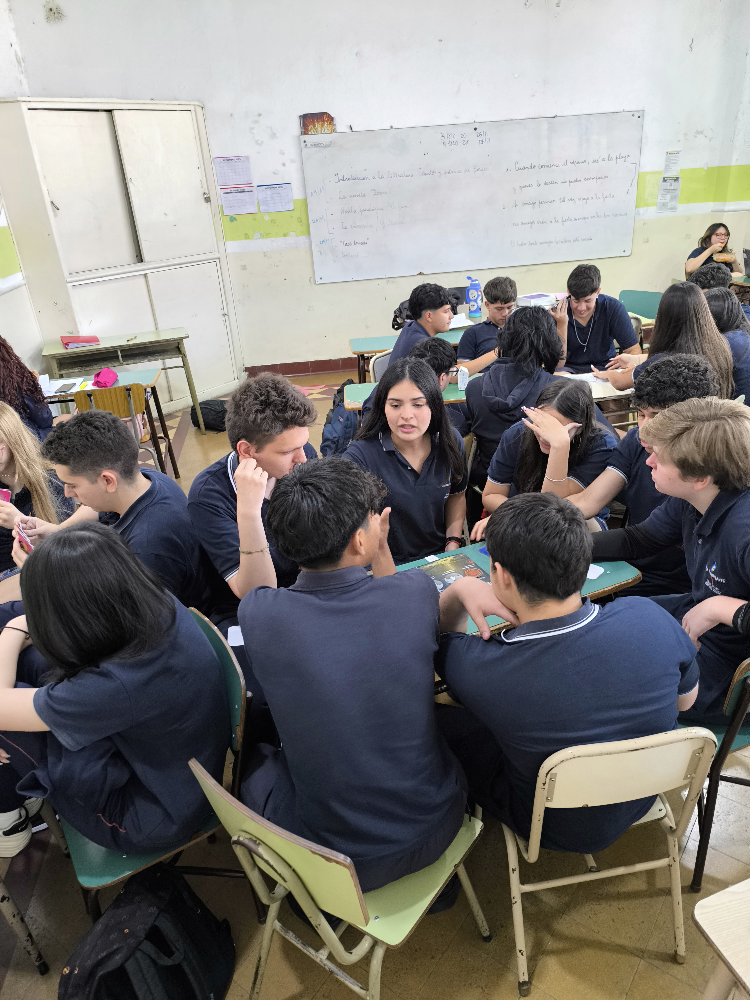
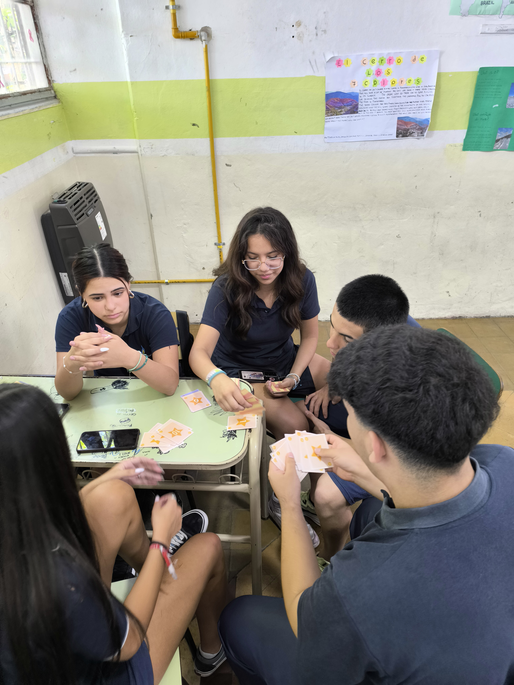

Alumnos de 3°B diseñaron juegos de mesa en Illustrator
Por alumnos de 3°B

En la materia Tratamiento de Imágenes por Medios Informáticos, los alumnos de 3º B estuvimos trabajando con Adobe Illustrator para crear algo muy especial: nuestros propios juegos de mesa, inspirado en juegos existentes.
Primero, pensamos ideas, personajes, tableros y reglas. Después creamos todo en Adobe Illustrator, donde aprendimos a usar formas, colores, capas y herramientas que nos ayudaron a que nuestros diseños quedaran como juegos de verdad. Cuando terminamos, imprimimos cada uno de los tableros, cartas y fichas.
La parte más divertida fue llevarlos al aula y jugar entre todos. Probamos los juegos de nuestros compañeros, descubrimos estrategias nuevas y nos divertimos.
Fue una experiencia donde aprendimos, trabajamos en equipo y disfrutamos de lo que nosotros mismos creamos.

 






